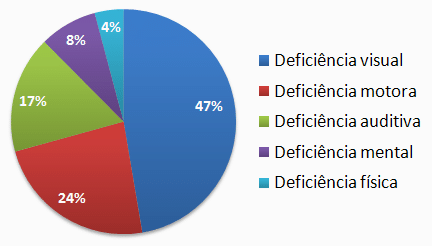

Inovação de plataforma para autonomia e independência de deficientes visuais
Problema
Como podemos criar um só aplicativo que supra a maioria das necessidades cotidianas de pessoas com deficiência visual?

Objetivos
Desenvolver um aplicativo integrado e acessível, que reúna diversas tecnologias e recursos para deficientes visuais, visando proporcionar praticidade, autonomia e inclusão digital, melhorando significativamente a qualidade de vida desse público.
Desenvolvimento do Aplicativo:
Criar um aplicativo multifuncional que incorpore tecnologias como leitores de tela, reconhecedores de objetos e texto, aplicativos de navegação, orientação e outras inteligências artificiais em um único ambiente. Eliminando a necessidade de baixar diversos aplicativos diferentes, assim proporcionando aos deficientes visuais uma acessibilidade mais simples e organizada às ferramentas essenciais para o seu dia a dia.
Personalização:
Desenvolver recursos de personalização que permitam aos usuários configurar o aplicativo de acordo com suas necessidades individuais, preferências e requisitos específicos. Utilizando inteligência artificial e aprendizados de máquina para aperfeiçoar constantemente o aplicativo, oferecendo recursos avançados e atualizações que acompanhem os avanços tecnológicos.
Promover a Inclusão Digital:
Garantir que o aplicativo seja acessível a todos os deficientes visuais, independentemente de suas habilidades individuais ou condições específicas, contribuindo assim para a inclusão digital. Proporcionar maior autonomia aos deficientes visuais, permitindo que eles participem ativamente da sociedade, tenham acesso à educação, ao emprego e reduzam o isolamento social.